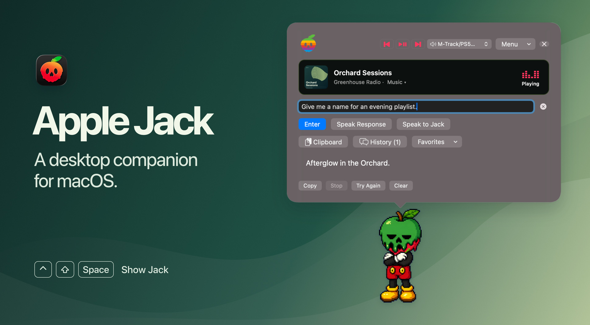
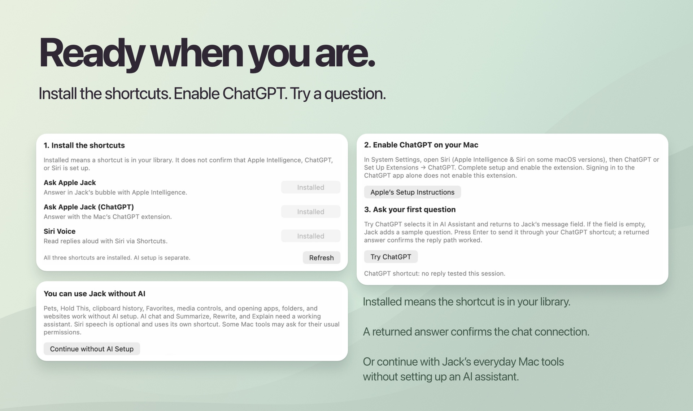
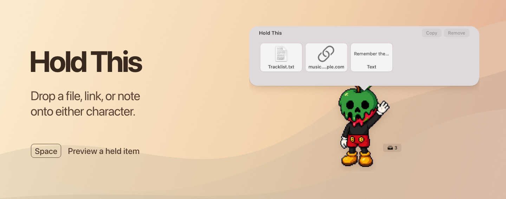
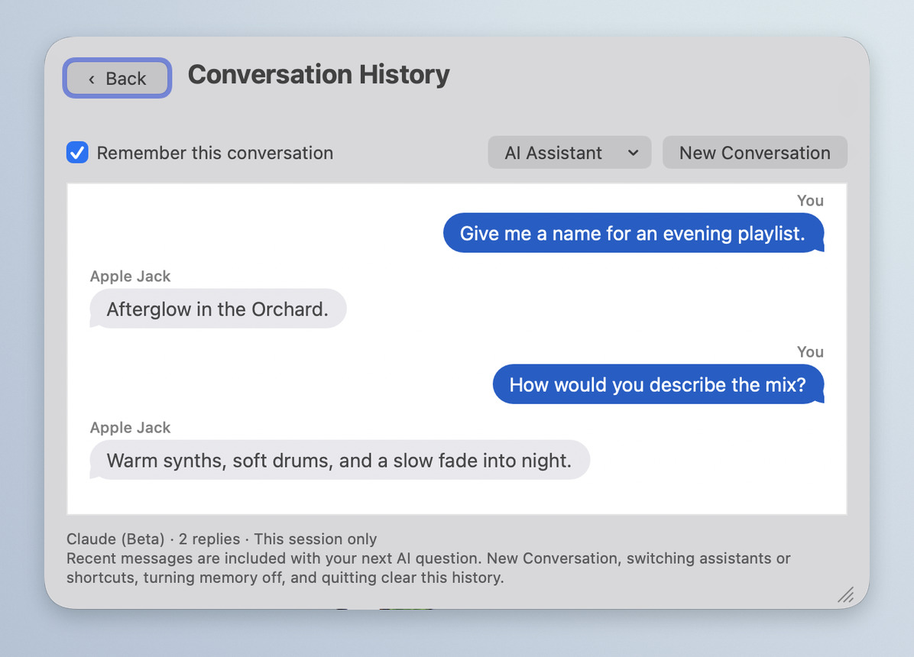
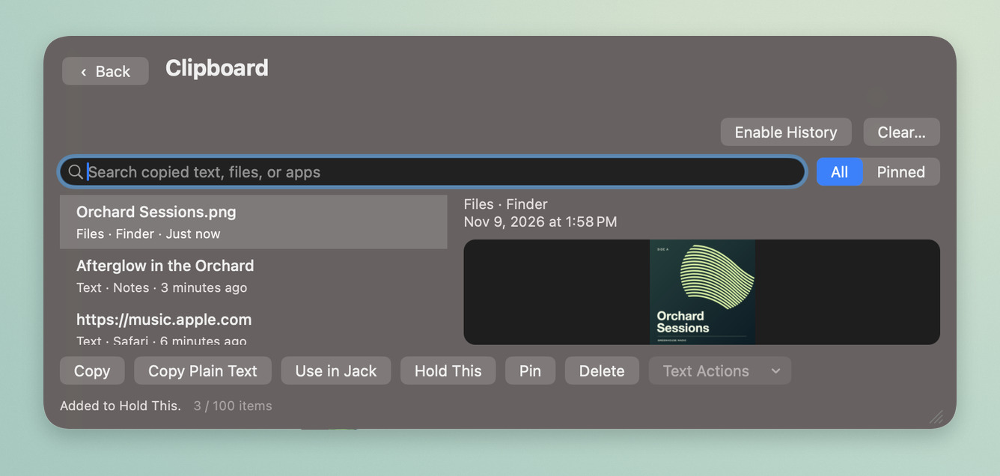
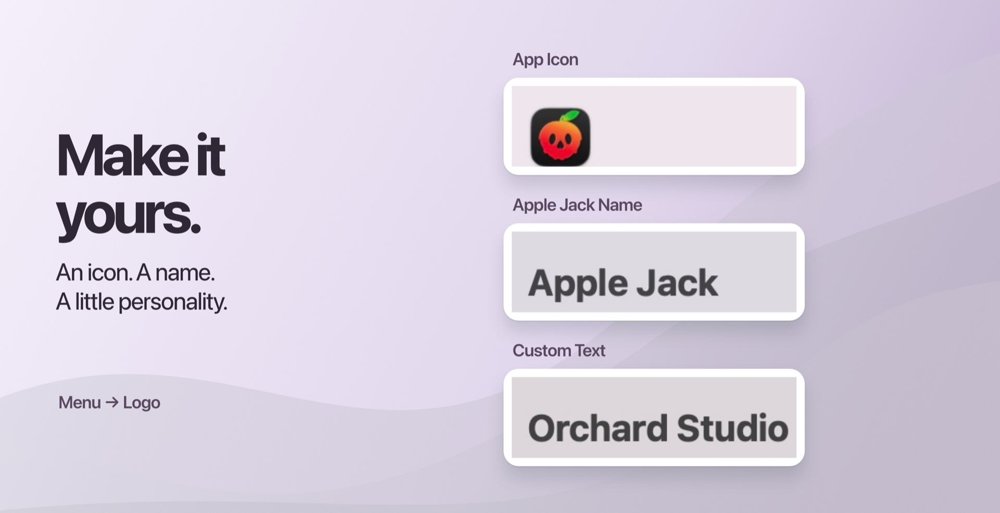
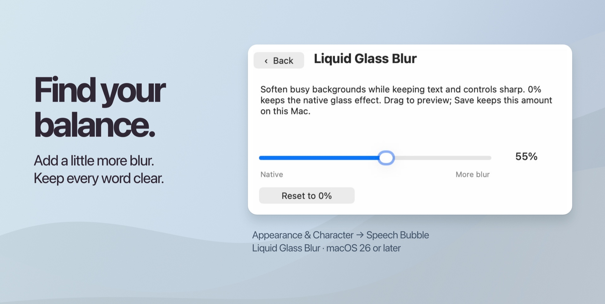
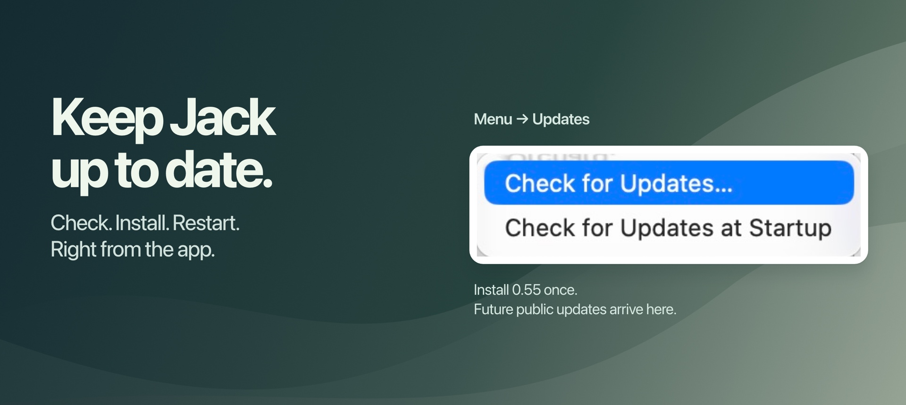

Drag Apple Jack Public into Applications and open it. Click your companion or press Control–Shift–Space to bring up the speech bubble. Type an app name, website, or Finder path and press Return to open it.

Open Menu → Shortcuts → Set Up Shortcuts…. Click Add… beside a shortcut and confirm in the Shortcuts app. When you return, Jack checks your library. Choose Refresh to check again.
Installed means the shortcut is in your library, not that the AI service is ready. Follow the on-screen steps to enable the ChatGPT extension in System Settings, choose Try ChatGPT, and press Enter to send the prepared question. A returned answer confirms the reply path. Signing into the ChatGPT app alone does not enable the extension. Choose Continue without AI Setup to use Jack’s everyday Mac tools first.

Open Menu → AI Assistant. You can use an installed text-in, text-out shortcut, ChatGPT through Apple Intelligence, or a signed-in Codex CLI. To change the shortcut used by Current Shortcut, open Menu → Shortcuts → Shortcut Settings….
Choose Claude Code Setup… in the AI Assistant menu. If you need Claude Code, choose Installation Guide. If it’s installed, choose Copy Sign-In Command, paste the command into Terminal, and finish signing in with an account that has Claude Code access. Then choose Claude (Beta) and ask a question.
Jack passes the question and any enabled conversation context to Claude Code for a text reply. Your Claude account’s usage limits apply. Jack’s local tools work independently of your assistant.
Choose Speak Response to hear the answer to a typed question. Choose Speak to Jack to dictate a question and hear the reply. Both display the answer in the bubble. macOS asks for microphone and speech recognition access when you first dictate.
Choose Apple Jack or Fonz under Menu → Appearance & Character → Pets. Select a character to preview it, then click Use Pet. Select Import ChatGPT Pet… to preview your own pets or import a sprite sheet. Enable Automatically Import All ChatGPT Pets to keep new companions available.
Drop a file, link, image, or text onto your companion to hold it. Drag the thumbnail out when you need it. Select a held item and press Space to preview it in the bubble. Press Space again to return from a file, text, or image preview. On a web preview, use Back or Open in Browser. Right-click a thumbnail and choose Add to Favorites to keep it.

Click History below the input field and scroll up to revisit earlier messages. Enable Remember This Conversation to give your assistant context for follow-up questions. New Conversation starts a fresh exchange.

Open Clipboard to find a recent copy. Choose a text entry to copy it again, use it in Jack, or summarize, rewrite, or explain it with your assistant. Click Hold This to add the selected item to the shelf. You can pause or clear history on the Clipboard page.

Type open example.com to preview a site inside Jack, or example.com to open it in your default browser. To run an installed macOS shortcut, type run shortcut followed by its name.
Open Menu → Logo to choose Mono, Classic, App Icon, Apple Jack Name, or Custom Text. Mono follows your appearance; Custom Text saves a name you enter.

On macOS 26 or later, choose Menu → Appearance & Character → Speech Bubble → Liquid Glass Blur…. Drag to preview, then Save. Cancel restores your previous amount. Reset to 0% returns to the native effect. Blur and Frost are separate controls.

Install 0.55 manually once if you are coming from 0.54 or earlier: download the disk image from GitHub Releases, quit Apple Jack Public, and replace the old copy in Applications. Your preferences and saved items stay on this Mac.
From 0.55 onward, choose Menu → Updates → Check for Updates… or type update. If a newer public version is available, follow the update window to download, install, and restart. Optional Check for Updates at Startup stays quiet when no newer update is available. Signed update downloads are verified by Sparkle. The current preview is unnotarized; macOS may show its usual first-launch verification message.
